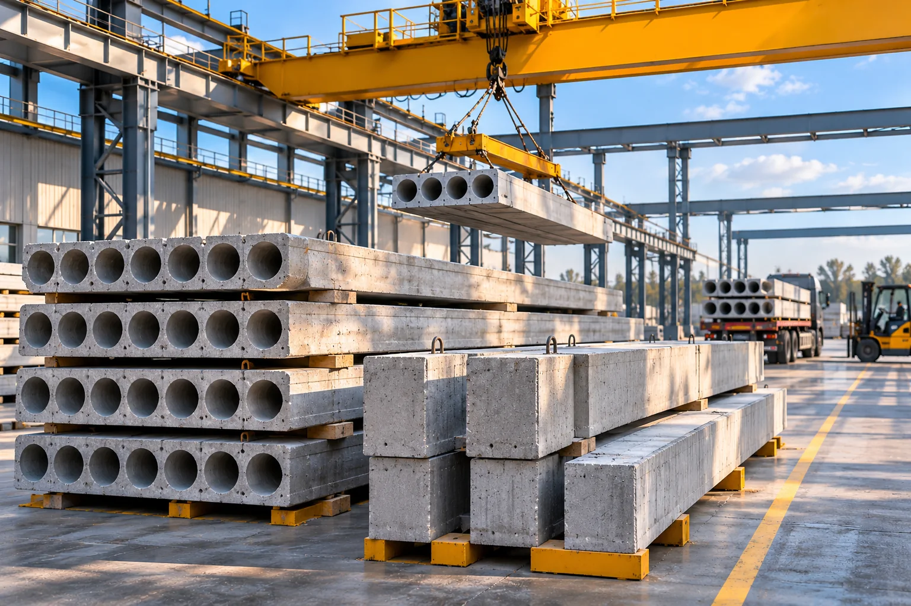
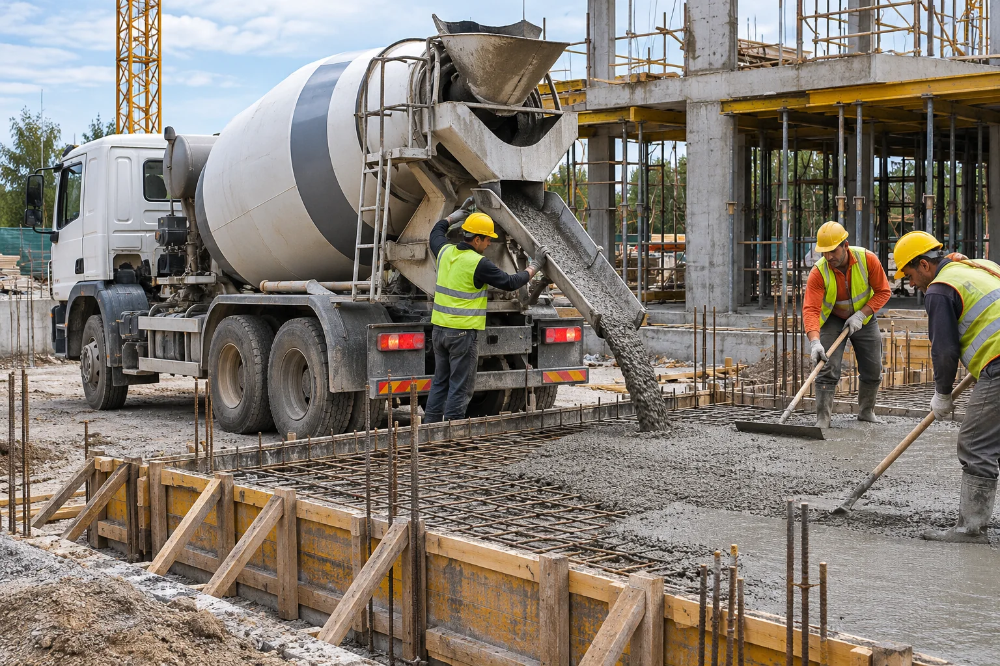

Производство бетонных смесей
Бетонный узел, подбор состава и согласование характеристик смеси под требования проекта.
Поставка бетонных смесей требует точного согласования параметров, объёма и графика. Поможем сформировать запрос и обсудить условия с профильными исполнителями.
Что входит в направление
От изготовления смеси и железобетонных изделий до доставки и укладки на объекте: параметры и условия подбираются по задаче.
Бетонный узел, подбор состава и согласование характеристик смеси под требования проекта.

Плиты и другие сборные изделия: номенклатура, размеры, партия и условия комплектации по запросу.

Автобетоносмесители, условия разгрузки, объём партии и согласованный график подачи.
Подача смеси для монолитных работ, опалубка, арматура и организация бетонирования.
Подход к реализации
Для расчёта условий нужны параметры смеси или изделий, объём, место поставки и сроки. Наличие, технические характеристики и исполнителя подтверждаем при подготовке предложения.
Понятный порядок работы
Получаем марку, объём и адрес строительного объекта.
Согласуем технические параметры, доступность и логистику.
Обсуждаем сроки, стоимость и порядок поставки с подтверждением исполнителя.
Сообщи марку, объём, объект и ориентировочную дату. Обсудим условия и доступные варианты.